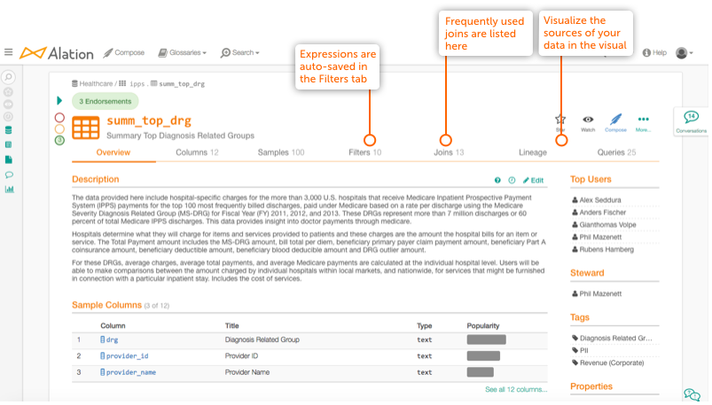

Catalog Pages¶
The fundamental unit of the data catalog is the catalog page. Catalog pages hold information about a company’s data assets, including data objects, queries, BI content, and more. For each data asset, the catalog page includes a title, description, and fields for additional information. Most catalog pages have templates that can be customized with custom fields.
Catalog pages are the primary way that Alation conveys specific data object information to its users. With Alation, information about data is documented in one place, reducing the need to rely on institutional knowledge for users to gain an understanding of their data sources.
Your data stewards can add important context to catalog pages by doing some or all of the following:
Documenting queries so new or inexperienced analysts can understand and re-run existing queries.
Curating data sets so that key resources are not asked the same question repeatedly.
Automated and Manually-contributed Knowledge About Your Data¶
Each catalog page provides both automated and manually-contributed knowledge about your data. For example, on the Overview tab of a table catalog page, Alation automatically sources Top Users and links to articles that cite the table:
{kind=link}
Using Catalog Page Question Marks to Query Top Users¶
Question marks appear next to Titles of data object and query catalog pages when you hover over the text. On those same pages, the Description field has the question mark always visible at the top right of the field, along with a history icon and an Edit button. Click these question marks to ask a Top User a question about the metadata or to ask them to update a title or description.
This differs from Conversations because your response chain will not be public.
Describe Data Quality¶
Alation allows you to endorse, warn, or deprecate any piece of data, in order to signal the quality of it to other users.
For more information, see Add Endorsements, Warnings, and Deprecation Messages to Data.
Watch Catalog Objects¶
Any user can be a Watcher of a data object (a Table, for example). Watchers are users who opt in to receive notification emails about changes to the data object they are watching. At any time, a user can opt in or out of Watching an object by clicking the Watch icon on the top right. You can use the same icon to quickly navigate to the list of objects you are watching.
Email Notifications for Watchers and Stewards¶
Email notifications for specific events (listed below) are sent to Stewards and Watchers. A Steward is usually a data expert assigned to a data object in the catalog. If you aren’t the assigned expert but are interested in receiving notifications, you can watch the object.
When you are a Steward or Watcher of a data object (for example, a Schema or a Table), you will receive an email notification when any of the following occurs:
Data Objects¶
A Tag is added or removed.
A Custom Field is edited.
The Title, Description, or URI (Data Source only) is edited.
The Metastore URI is changed (for Data Sources using with a metastore).
Articles¶
Articles have one single notification email that has aggregate information whenever the Title, Description, or a Custom Field is edited.
Email Notification Rules¶
If a user is both a Steward and a Watcher of an Article or Data Object, they will receive only one email.
All emails are identical for both Stewards and Watchers, except for the subject line which states whether the email is for a Steward or Watcher.
Email Notification Settings¶
To learn about editing your email notification settings, see Email Notifications Preferences.